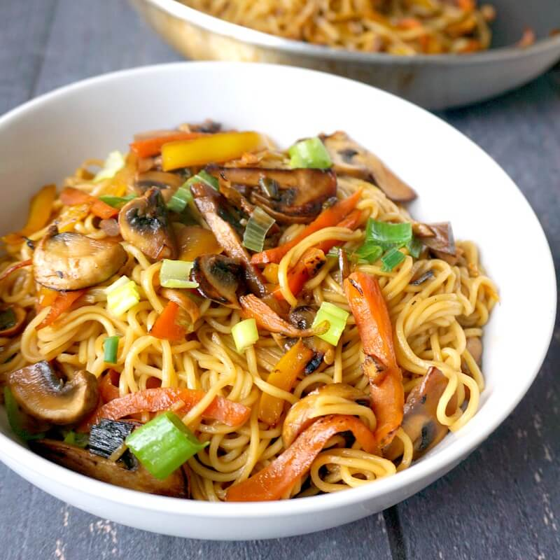

Classic Stir-Fry

A hot and fresh stir-fry ready to be devoured!
Does anything need to be said about this dish? Classic is in its name for a reason! Packed with flavor, customizability and good-quality ingredients, this dish should be a staple in any kitchen!
This recipe is in two parts, the first is preparing the extra special stir-fry sauce, which, at its roots, is a combination of aromatics, soy sauce, rice wine vinegar, and a sweetener. The second part is preparing the actual meal.
Ingredients
For the sauce
- Garlic
- Ginger
- Soy sauce
- Rice wine vinegar
- Crunchy peanut butter
- Honey
- Toasted sesame seed oil
- Chilli flakes/Sambal Oelek
For the stir-fry
- Rice noodles
- Garlic
- Onions
- Dry red chillies
- Cashew nuts
- Mushrooms
- Bell peppers
- Broccoli
- Carrots
- Cabbage
- Any other vegetable you like!
- Green onions and sesame seeds for garnish
Steps
- Whisk all ingredients for the sauce in a bowl, taste for flavor and set aside.
- Cook noodles according to package instructions.
- Chop/julienne vegetables and slice garlic.
- Heat wok with enough oil over medium heat.
- Add sliced garlic and dry red chillies and saute until fragrant (~30 sec).
- Add cashew nuts and fry for another 30 sec.
- Add vegetables and increase flame to high.
- Stir-fry vegetables until tender but not soft (~4-5 mins).
- Reduce heat and slowly pour in 1/3 stir-fry sauce.
- Add cooked noodles and slowly pour in remainder of sauce.
- Once the entire dish is well coated, serve with sesame seeds and green onions as garnish.